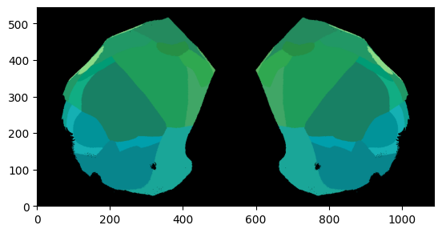
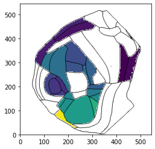
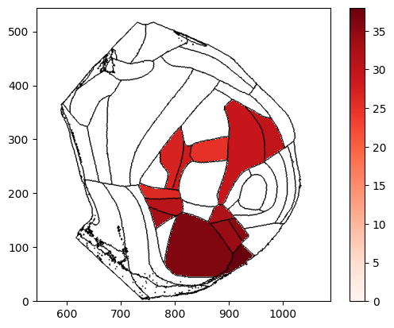
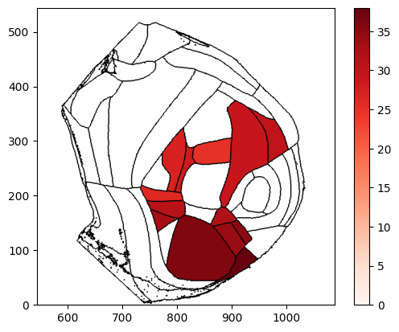
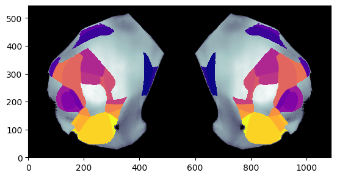

Plotting brain region values on cortical flatmap
This example walks through various ways to overlay brain region values on a cortical flatmap
The dorsal cortex flatmap
The dorsal_cortex flatmap comprises a flattened volume of cortex up to depth 2000 um
[1]:
from ibllib.atlas import FlatMap
res = 25
flmap = FlatMap(flatmap='dorsal_cortex', res_um=res)
# Plot flatmap at depth = 0
flmap.plot_flatmap(int(0 / res))
Out[1]:
<AxesSubplot:>

[2]:
# Plot flatmap at depth = 800 um
flmap.plot_flatmap(int(800 / res))
Out[2]:
<AxesSubplot:>

Data preparation
In order to plot brain regions values on the flatmap an array of acronyms and an array of values corresponding to each acronym must be provided. A detailed overview of how to prepare your data can be found here
[3]:
import numpy as np
# prepare array of acronyms
acronyms = np.array(['ACAd1', 'ACAv1', 'AId1', 'AIp1', 'AIv1', 'AUDd1', 'AUDp1','AUDpo1', 'AUDv1',
'SSp-m1', 'SSp-n1', 'SSp-tr1', 'SSp-ul1','SSp-un1', 'SSs1',
'VISC1', 'VISa1', 'VISal1', 'VISam1', 'VISl1', 'VISli1', 'VISp1', 'VISp2/3', 'VISpl1', 'VISpm1',
'SSp-n2/3', 'SSp-tr2/3', 'SSp-ul2/3', 'SSp-un2/3', 'SSs2/3',
'VISC2/3', 'VISa2/3', 'VISal2/3', 'VISam2/3', 'VISl2/3','VISli2/3', 'VISp2/3', 'VISpl1', 'VISpl2/3'])
# assign data to each acronym
values = np.arange(acronyms.size)
[4]:
from ibllib.atlas.regions import BrainRegions
br = BrainRegions()
# prepare array of acronyms with beryl mapping
acronyms_beryl = np.unique(br.acronym2acronym(acronyms, mapping='Beryl'))
values_beryl = np.arange(acronyms_beryl.size)
[5]:
# prepare different values for left and right hemipshere for Beryl acronyms
values_beryl_lh = np.random.randint(0, 10, acronyms_beryl.size)
values_beryl_rh = np.random.randint(0, 10, acronyms_beryl.size)
values_beryl_lr = np.c_[values_beryl_lh, values_beryl_rh]
Examples
[6]:
from ibllib.atlas.plots import plot_scalar_on_flatmap
# Plot region values on the left hemisphere at depth=0um overlaid on boundary image using Allen mapping
fig, ax = plot_scalar_on_flatmap(acronyms, values, depth=0, mapping='Allen', hemisphere='left', background='boundary',
cmap='viridis', flmap_atlas=flmap)

[7]:
# Plot region values on the right hemisphere at depth=200um overlaid on boundary image using Allen mapping and show cbar
fig, ax, cbar = plot_scalar_on_flatmap(acronyms, values, depth=200, mapping='Allen', hemisphere='right', background='boundary',
cmap='Reds', flmap_atlas=flmap, show_cbar=True)

[8]:
# Plot single column region values on the both hemisphere at depth=800um overlaid dwi Allen image using Beryl mapping
fig, ax = plot_scalar_on_flatmap(acronyms_beryl, values_beryl, depth=800, mapping='Beryl', hemisphere='both',
background='image', cmap='plasma', flmap_atlas=flmap)

[9]:
# Plot two column region values on the both hemispheres at depth=0um on boundary image using Allen mapping
fig, ax, cbar = plot_scalar_on_flatmap(acronyms_beryl, values_beryl_lr, depth=0, mapping='Beryl', hemisphere='both',
background='boundary', cmap='Blues', flmap_atlas=flmap, show_cbar=True)
